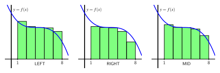
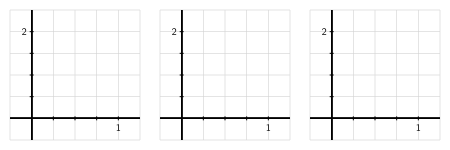
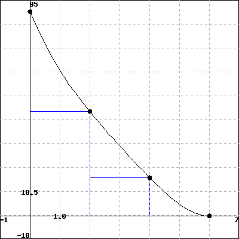
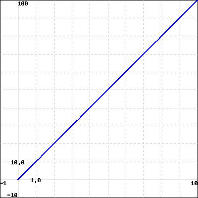

How do we accurately evaluate a definite integral such as \(\int_0^1 e^{-x^2} \, dx\) when we cannot use the First Fundamental Theorem of Calculus because the integrand lacks an elementary algebraic antiderivative? Are there ways to generate accurate estimates without using extremely large values of \(n\) in Riemann sums?
What is the Trapezoid Rule, and how is it related to left, right, and middle Riemann sums?
How are the errors in the Trapezoid Rule and Midpoint Rule related, and how can they be used to develop an even more accurate rule?
When we first explored finding the net signed area bounded by a curve, we developed the concept of a Riemann sum as a helpful estimation tool and a key step in the definition of the definite integral. Recall that the left, right, and middle Riemann sums of a function \(f\) on an interval \([a,b]\) are given by
\begin{align}
L_n = f(x_0) \Delta x + f(x_1) \Delta x + \cdots + f(x_{n-1}) \Delta x \amp= \sum_{i = 0}^{n-1} f(x_i) \Delta x,\tag{5.6.1}\\
R_n = f(x_1) \Delta x + f(x_2) \Delta x + \cdots + f(x_{n}) \Delta x \amp= \sum_{i = 1}^{n} f(x_i) \Delta x,\tag{5.6.2}\\
M_n = f(\overline{x}_1) \Delta x + f(\overline{x}_2) \Delta x + \cdots + f(\overline{x}_{n}) \Delta x \amp= \sum_{i = 1}^{n} f(\overline{x}_i) \Delta x\text{,}\tag{5.6.3}
\end{align}
where \(x_0 = a\text{,}\)\(x_i = a + i\Delta x\text{,}\)\(x_n = b\text{,}\) and \(\Delta x = \frac{b-a}{n}\text{.}\) For the middle sum, we defined \(\overline{x}_{i} = (x_{i-1} + x_i)/2\text{.}\)
A Riemann sum is a sum of (possibly signed) areas of rectangles. The value of \(n\) determines the number of rectangles, and our choice of left endpoints, right endpoints, or midpoints determines the heights of the rectangles. We can see the similarities and differences among these three options in Figure 5.6.1, where we consider the function \(f(x) = \frac{1}{20}(x-4)^3 + 7\) on the interval \([1,8]\text{,}\) and use 5 rectangles for each of the Riemann sums.

Figure5.6.1.Left, right, and middle Riemann sums for \(y = f(x)\) on \([1,8]\) with 5 subintervals.
While it is a good exercise to compute a few Riemann sums by hand, just to ensure that we understand how they work and how varying the function, the number of subintervals, and the choice of endpoints or midpoints affects the result, using computing technology is the best way to determine \(L_n\text{,}\)\(R_n\text{,}\) and \(M_n\text{.}\) Any computer algebra system will offer this capability; as we saw in Preview Activity 4.3.1, a straightforward option that is freely available online is this applet 1 . Note that we can adjust the formula for \(f(x)\text{,}\) the window of \(x\)- and \(y\)-values of interest, the number of subintervals, and the method. (See Preview Activity 4.3.1 for any needed reminders on how the applet works.)
In this section we explore several different alternatives for estimating definite integrals. Our main goal is to develop formulas to estimate definite integrals accurately without using a large numbers of rectangles.
Preview Activity5.6.1.
As we begin to investigate ways to approximate definite integrals, it will be insightful to compare results to integrals whose exact values we know. To that end, the following sequence of questions centers on \(\int_0^3 x^2 \, dx\text{.}\)
(a) Use the Desmos graph at https://www.desmos.com/calculator/jnhujcwbie 2  (The link opens a new tab/window) with the function \(f(x) = x^2\) on the window of \(x\) values from \(0\) to \(3\) to compute \(L_3\text{,}\) the left Riemann sum with three subintervals.
\(L_3 =\)
(b) Likewise, use the same Desmos graph to compute \(R_3\) and \(M_3\text{,}\) the right and middle Riemann sums with three subintervals, respectively.
\(R_3 =\)
\(M_3 =\)
(c) Use the Fundamental Theorem of Calculus to compute the exact value of \(I = \int_0^3 x^2 \, dx\text{.}\)
\(I =\)
(d) We define the error in an approximation of a definite integral to be the difference between the integral's exact value (\(I\) and the approximation's value. What is the error that results from using \(L_3\text{?}\) From \(R_3\text{?}\) From \(M_3\text{?}\)
\(I - L_3=\)
\(I - R_3=\)
\(I - M_3=\)
(e) In what follows in this section, we will learn a new approach to estimating the value of a definite integral known as the Trapezoid Rule. The basic idea is to use trapezoids, rather than rectangles, to estimate the area under a curve. What is the formula for the area of a trapezoid with bases of length \(b_1\) and \(b_2\) and height \(h\text{?}\) (Type b1 and b2 for the bases).
(f) Working by hand, estimate the area under \(f(x) = x^2\) on \([0,3]\) using three subintervals and three corresponding trapezoids.
\(T_3=\)
What is the error in this approximation? \(I - T_3=\)
How does it compare to the errors you calculated in (d)? Select all answers that are true.
Less in magnitude than \(M_3\) error
Smaller in magnitude than \(L_3\) error and \(R_3\) error, but more than \(M_3\) error
2 times the magnitude as compared with \(M_3\) error
More in magnitude than \(R_3\) error
Opposite sign compared with \(M_3\) error
More in magnitude than \(L_3\) error
None of the above
Subsection5.6.1The Trapezoid Rule
So far, we have used the simplest possible quadrilaterals (that is, rectangles) to estimate areas. It is natural, however, to wonder if other familiar shapes might serve us even better.
An alternative to \(L_n\text{,}\)\(R_n\text{,}\) and \(M_n\) is called the Trapezoid Rule. Rather than using a rectangle to estimate the (signed) area bounded by \(y = f(x)\) on a small interval, we use a trapezoid. For example, in Figure 5.6.2, we estimate the area under the curve using three subintervals and the trapezoids that result from connecting the corresponding points on the curve with straight lines.
Figure5.6.2.Estimating \(\int_a^b f(x) \ dx\) using three subintervals and trapezoids, rather than rectangles, where \(a = x_0\) and \(b = x_3\text{.}\)
The biggest difference between the Trapezoid Rule and a Riemann sum is that on each subinterval, the Trapezoid Rule uses two function values, rather than one, to estimate the (signed) area bounded by the curve. For instance, to compute \(D_1\text{,}\) the area of the trapezoid on \([x_0, x_1]\text{,}\) we observe that the left base has length \(f(x_0)\text{,}\) while the right base has length \(f(x_1)\text{.}\) The height of the trapezoid is \(x_1 - x_0 = \Delta x = \frac{b-a}{3}\text{.}\) The area of a trapezoid is the average of the bases times the height, so we have
Using similar computations for \(D_2\) and \(D_3\text{,}\) we find that \(T_3\text{,}\) the trapezoidal approximation to \(\int_a^b f(x) \, dx\) is given by
Because both left and right endpoints are being used, we recognize within the trapezoidal approximation the use of both left and right Riemann sums. Rearranging the expression for \(T_3\) by removing factors of \(\frac{1}{2}\) and \(\Delta x \text{,}\) grouping the left endpoint and right endpoint evaluations of \(f\text{,}\) we see that
We now observe that two familiar sums have arisen. The left Riemann sum \(L_3\) is \(L_3 = f(x_0) \Delta x + f(x_1) \Delta x + f(x_2) \Delta x\text{,}\) and the right Riemann sum is \(R_3 = f(x_1) \Delta x + f(x_2) \Delta x + f(x_3) \Delta x\text{.}\) Substituting \(L_3\) and \(R_3\) for the corresponding expressions in Equation (5.6.4), it follows that \(T_3 = \frac{1}{2} \left[ L_3 + R_3 \right]\text{.}\) We have thus seen a very important result: using trapezoids to estimate the (signed) area bounded by a curve is the same as averaging the estimates generated by using left and right endpoints.
The Trapezoid Rule.
The trapezoidal approximation, \(T_n\text{,}\) of the definite integral \(\int_a^b f(x) \, dx\) using \(n\) subintervals is given by the rule
In this activity, we explore the relationships among the errors generated by left, right, midpoint, and trapezoid approximations to the definite integral \(\int_1^2 \frac{1}{x^2} \, dx\text{.}\)
Use the First FTC to evaluate \(\int_1^2 \frac{1}{x^2} \, dx\) exactly.
Use appropriate computing technology to compute the following approximations for \(\int_1^2 \frac{1}{x^2} \, dx\text{:}\)\(T_4\text{,}\)\(M_4\text{,}\)\(T_8\text{,}\) and \(M_8\text{.}\)
Let the error that results from an approximation be the approximation's value minus the exact value of the definite integral. For instance, if we let \(E_{T,4}\) represent the error that results from using the trapezoid rule with 4 subintervals to estimate the integral, we have
Which estimate is larger than the true value of the definite integral?
Note that how the curve bends makes a big difference in whether the trapezoid rule over- or under-estimates the value of the definite integral.
Subsection5.6.2Comparing the Midpoint and Trapezoid Rules
We know from the definition of the definite integral that if we let \(n\) be large enough, we can make any of the approximations \(L_n\text{,}\)\(R_n\text{,}\) and \(M_n\) as close as we'd like (in theory) to the exact value of \(\int_a^b f(x) \, dx\text{.}\) Thus, it may be natural to wonder why we ever use any rule other than \(L_n\) or \(R_n\) (with a sufficiently large \(n\) value) to estimate a definite integral. One of the primary reasons is that as \(n \to \infty\text{,}\)\(\Delta x = \frac{b-a}{n} \to 0\text{,}\) and thus in a Riemann sum calculation with a large \(n\) value, we end up multiplying by a number that is very close to zero. Doing so often generates roundoff error, because representing numbers close to zero accurately is a persistent challenge for computers.
Hence, we explore ways to estimate definite integrals to high levels of precision, but without using extremely large values of \(n\text{.}\) Paying close attention to patterns in errors, such as those observed in Activity 5.6.2, is one way to begin to see some alternate approaches.
To begin, we compare the errors in the Midpoint and Trapezoid rules. First, consider a function that is concave up on a given interval, and picture approximating the area bounded on that interval by both the Midpoint and Trapezoid rules using a single subinterval.
Figure5.6.3.Estimating \(\int_a^b f(x) \ dx\) using a single subinterval: at left, the trapezoid rule; in the middle, the midpoint rule; at right, a modified way to think about the midpoint rule.
As seen in Figure 5.6.3, it is evident that whenever the function is concave up on an interval, the Trapezoid Rule with one subinterval, \(T_1\text{,}\) will overestimate the exact value of the definite integral on that interval. From a careful analysis of the line that bounds the top of the rectangle for the Midpoint Rule (shown in magenta), we see that if we rotate this line segment until it is tangent to the curve at the midpoint of the interval (as shown at right in Figure 5.6.3), the resulting trapezoid has the same area as \(M_1\text{,}\) and this value is less than the exact value of the definite integral. Thus, when the function is concave up on the interval, \(M_1\) underestimates the integral's true value.
Figure5.6.4.Comparing the error in estimating \(\int_a^b f(x) \ dx\) using a single subinterval: in red, the error from the Trapezoid rule; in light red, the error from the Midpoint rule.
These observations extend easily to the situation where the function's concavity remains consistent but we use larger values of \(n\) in the Midpoint and Trapezoid Rules. Hence, whenever \(f\) is concave up on \([a,b]\text{,}\)\(T_n\) will overestimate the value of \(\int_a^b f(x) \, dx\text{,}\) while \(M_n\) will underestimate \(\int_a^b f(x) \, dx\text{.}\) The reverse observations are true in the situation where \(f\) is concave down.
Next, we compare the size of the errors between \(M_n\) and \(T_n\text{.}\) Again, we focus on \(M_1\) and \(T_1\) on an interval where the concavity of \(f\) is consistent. In Figure 5.6.4, where the error of the Trapezoid Rule is shaded in red, while the error of the Midpoint Rule is shaded lighter red, it is visually apparent that the error in the Trapezoid Rule is more significant. To see how much more significant, let's consider two examples and some particular computations.
If we let \(f(x) = 1-x^2\) and consider \(\int_0^1 f(x) \,dx\text{,}\) we know by the First FTC that the exact value of the integral is
Using appropriate technology to compute \(M_4\text{,}\)\(M_8\text{,}\)\(T_4\text{,}\) and \(T_8\text{,}\) as well as the corresponding errors \(E_{M,4}\text{,}\)\(E_{M,8}\text{,}\)\(E_{T,4}\text{,}\) and \(E_{T,8}\text{,}\) as we did in Activity 5.6.2, we find the results summarized in Table 5.6.5. We also include the approximations and their errors for the example \(\int_1^2 \frac{1}{x^2} \, dx\) from Activity 5.6.2.
Table5.6.5.Calculations of \(T_4\text{,}\)\(M_4\text{,}\)\(T_8\text{,}\) and \(M_8\text{,}\) along with corresponding errors, for the definite integrals \(\int_0^1 (1-x^2) \ dx\) and \(\int_1^2 \frac{1}{x^2} \ dx\text{.}\)
Rule
\(\int_0^1 (1-x^2) \,dx = 0.\overline{6}\)
error
\(\int_1^2 \frac{1}{x^2} \, dx = 0.5\)
error
\(T_4\)
\(0.65625\)
\(-0.0104166667\)
\(0.5089937642\)
\(0.0089937642\)
\(M_4\)
\(0.671875\)
\(0.0052083333\)
\(0.4955479365\)
\(-0.0044520635\)
\(T_8\)
\(0.6640625\)
\(-0.0026041667\)
\(0.5022708502\)
\(0.0022708502\)
\(M_8\)
\(0.66796875\)
\(0.0013020833\)
\(0.4988674899\)
\(-0.0011325101\)
For a given function \(f\) and interval \([a,b]\text{,}\)\(E_{T,4} = T_4 - \int_a^b f(x) \,dx\) calculates the difference between the approximation generated by the Trapezoid Rule with \(n = 4\) and the exact value of the definite integral. If we look at not only \(E_{T,4}\text{,}\) but also the other errors generated by using \(T_n\) and \(M_n\) with \(n = 4\) and \(n = 8\) in the two examples noted in Table 5.6.5, we see an evident pattern. Not only is the sign of the error (which measures whether the rule generates an over- or under-estimate) tied to the rule used and the function's concavity, but the magnitude of the errors generated by \(T_n\) and \(M_n\) seems closely connected. In particular, the errors generated by the Midpoint Rule seem to be about half the size (in absolute value) of those generated by the Trapezoid Rule.
That is, we can observe in both examples that \(E_{M,4} \approx -\frac{1}{2} E_{T,4}\) and \(E_{M,8} \approx -\frac{1}{2}E_{T,8}\text{.}\) This property of the Midpoint and Trapezoid Rules turns out to hold in general: for a function of consistent concavity, the error in the Midpoint Rule has the opposite sign and approximately half the magnitude of the error of the Trapezoid Rule. Written symbolically,
This important relationship suggests a way to combine the Midpoint and Trapezoid Rules to create an even more accurate approximation to a definite integral.
Subsection5.6.3Simpson's Rule
When we first developed the Trapezoid Rule, we observed that it is an average of the Left and Right Riemann sums:
If a function is always increasing or always decreasing on the interval \([a,b]\text{,}\) one of \(L_n\) and \(R_n\) will over-estimate the true value of \(\int_a^b f(x) \, dx\text{,}\) while the other will under-estimate the integral. Thus, the errors that result from \(L_n\) and \(R_n\) will have opposite signs; so averaging \(L_n\) and \(R_n\) eliminates a considerable amount of the error present in the respective approximations. In a similar way, it makes sense to think about averaging \(M_n\) and \(T_n\) in order to generate a still more accurate approximation.
We've just observed that \(M_n\) is typically about twice as accurate as \(T_n\text{.}\) So we use the weighted average
The rule for \(S_{2n}\) giving by Equation (5.6.5) is usually known as Simpson's Rule. 3  Note that we use “\(S_{2n}\)” rather that “\(S_n\)” since the \(n\) points the Midpoint Rule uses are different from the \(n\) points the Trapezoid Rule uses, and thus Simpson's Rule is using \(2n\) points at which to evaluate the function. We build upon the results in Table 5.6.5 to see the approximations generated by Simpson's Rule. In particular, in Table 5.6.6, we include all of the results in Table 5.6.5, but include additional results for \(S_8 = \frac{2M_4 + T_4}{3}\) and \(S_{16} = \frac{2M_8 + T_8}{3}\text{.}\)
Table5.6.6.Table 5.6.5 updated to include \(S_8\text{,}\)\(S_{16}\text{,}\) and the corresponding errors.
Rule
\(\int_0^1 (1-x^2) \,dx = 0.\overline{6}\)
error
\(\int_1^2 \frac{1}{x^2} \, dx = 0.5\)
error
\(T_4\)
\(0.65625\)
\(-0.0104166667\)
\(0.5089937642\)
\(0.0089937642\)
\(M_4\)
\(0.671875\)
\(0.0052083333\)
\(0.4955479365\)
\(-0.0044520635\)
\(S_8\)
\(0.6666666667\)
\(0\)
\(0.5000298792\)
\(0.0000298792\)
\(T_8\)
\(0.6640625\)
\(-0.0026041667\)
\(0.5022708502\)
\(0.0022708502\)
\(M_8\)
\(0.66796875\)
\(0.0013020833\)
\(0.4988674899\)
\(-0.0011325101\)
\(S_{16}\)
\(0.6666666667\)
\(0\)
\(0.5000019434\)
\(0.0000019434\)
The results seen in Table 5.6.6 are striking. If we consider the \(S_{16}\) approximation of \(\int_1^2 \frac{1}{x^2} \, dx\text{,}\) the error is only \(E_{S,16} = 0.0000019434\text{.}\) By contrast, \(L_8 = 0.5491458502\text{,}\) so the error of that estimate is \(E_{L,8} = 0.0491458502\text{.}\) Moreover, we observe that generating the approximations for Simpson's Rule is almost no additional work: once we have \(L_n\text{,}\)\(R_n\text{,}\) and \(M_n\) for a given value of \(n\text{,}\) it is a simple exercise to generate \(T_n\text{,}\) and from there to calculate \(S_{2n}\text{.}\) Finally, note that the error in the Simpson's Rule approximations of \(\int_0^1 (1-x^2) \, dx\) is zero! 4 
These rules are not only useful for approximating definite integrals such as \(\int_0^1 e^{-x^2} \, dx\text{,}\) for which we cannot find an elementary antiderivative of \(e^{-x^2}\text{,}\) but also for approximating definite integrals when we are given a function through a table of data.
Activity5.6.3.
A car traveling along a straight road is braking and its velocity is measured at several different points in time, as given in the following table. Assume that \(v\) is continuous, always decreasing, and always decreasing at a decreasing rate, as is suggested by the data.
Plot the given data on the set of axes provided in Figure 5.6.8 with time on the horizontal axis and the velocity on the vertical axis.
What definite integral will give you the exact distance the car traveled on \([0,1.8]\text{?}\)
Estimate the total distance traveled on \([0,1.8]\) by computing \(L_3\text{,}\)\(R_3\text{,}\) and \(T_3\text{.}\) Which of these under-estimates the true distance traveled?
Estimate the total distance traveled on \([0,1.8]\) by computing \(M_3\text{.}\) Is this an over- or under-estimate? Why?
Using your results from (c) and (d), improve your estimate further by using Simpson's Rule.
What is your best estimate of the average velocity of the car on \([0,1.8]\text{?}\) Why? What are the units on this quantity?
What are the units on \(v(t) \cdot \Delta t\text{?}\)
Recall the standard rules for sums that produce \(L_3\text{,}\)\(R_3\text{,}\)\(T_3\text{.}\)
Think about concavity to decide if \(M_3\) is an over- or under-estimate.
Recall how \(S_3\) is a weighted average of \(T_3\) and \(M_3\text{.}\)
Simpson's Rule gives the best estimate for a function of consistent concavity.
Subsection5.6.4Overall observations regarding \(L_n\text{,}\)\(R_n\text{,}\)\(T_n\text{,}\)\(M_n\text{,}\) and \(S_{2n}\text{.}\)
As we conclude our discussion of numerical approximation of definite integrals, it is important to summarize general trends in how the various rules over- or under-estimate the true value of a definite integral, and by how much. To revisit some past observations and see some new ones, we consider the following activity.
Activity5.6.4.
Consider the functions \(f(x) = 2-x^2\text{,}\)\(g(x) = 2-x^3\text{,}\) and \(h(x) = 2-x^4\text{,}\) all on the interval \([0,1]\text{.}\) For each of the questions that require a numerical answer in what follows, write your answer exactly in fraction form.
On the three sets of axes provided in Figure 5.6.9, sketch a graph of each function on the interval \([0,1]\text{,}\) and compute \(L_1\) and \(R_1\) for each. What do you observe?
Compute \(M_1\) for each function to approximate \(\int_0^1 f(x) \,dx\text{,}\)\(\int_0^1 g(x) \,dx\text{,}\) and \(\int_0^1 h(x) \,dx\text{,}\) respectively.
Compute \(T_1\) for each of the three functions, and hence compute \(S_2\) for each of the three functions.
Evaluate each of the integrals \(\int_0^1 f(x) \,dx\text{,}\)\(\int_0^1 g(x) \,dx\text{,}\) and \(\int_0^1 h(x) \,dx\) exactly using the First FTC.
For each of the three functions \(f\text{,}\)\(g\text{,}\) and \(h\text{,}\) compare the results of \(L_1\text{,}\)\(R_1\text{,}\)\(M_1\text{,}\)\(T_1\text{,}\) and \(S_2\) to the true value of the corresponding definite integral. What patterns do you observe?

Figure5.6.9.Axes for plotting the functions in Activity 5.6.4.
For each estimate, just one function evaluation is needed.
Use the midpoint rule with \(n=1\text{.}\)
Remember that both the trapezoid and Simpson's rule can be executed using (weighted) averages of known values.
Find antiderivatives to evaluate the integrals exactly.
Think about trends in over- and under-estimates.
The results seen in Activity 5.6.4 generalize nicely. For instance, if \(f\) is decreasing on \([a,b]\text{,}\)\(L_n\) will over-estimate the exact value of \(\int_a^b f(x) \,dx\text{,}\) and if \(f\) is concave down on \([a,b]\text{,}\)\(M_n\) will over-estimate the exact value of the integral. An excellent exercise is to write a collection of scenarios of possible function behavior, and then categorize whether each of \(L_n\text{,}\)\(R_n\text{,}\)\(T_n\text{,}\) and \(M_n\) is an over- or under-estimate.
Finally, we make two important notes about Simpson's Rule. When T. Simpson first developed this rule, his idea was to replace the function \(f\) on a given interval with a quadratic function that shared three values with the function \(f\text{.}\) In so doing, he guaranteed that this new approximation rule would be exact for the definite integral of any quadratic polynomial. In one of the pleasant surprises of numerical analysis, it turns out that even though it was designed to be exact for quadratic polynomials, Simpson's Rule is exact for any cubic polynomial: that is, if we are interested in an integral such as \(\int_2^5 (5x^3 - 2x^2 + 7x - 4)\, dx\text{,}\)\(S_{2n}\) will always be exact, regardless of the value of \(n\text{.}\) This is just one more piece of evidence that shows how effective Simpson's Rule is as an approximation tool for estimating definite integrals. 5 
Subsection5.6.5Summary
For a definite integral such as \(\int_0^1 e^{-x^2} \, dx\) when we cannot use the First Fundamental Theorem of Calculus because the integrand lacks an elementary algebraic antiderivative, we can estimate the integral's value by using a sequence of Riemann sum approximations. Typically, we start by computing \(L_n\text{,}\)\(R_n\text{,}\) and \(M_n\) for one or more chosen values of \(n\text{.}\)
The Trapezoid Rule, which estimates \(\int_a^b f(x) \, dx\) by using trapezoids, rather than rectangles, can also be viewed as the average of Left and Right Riemann sums. That is, \(T_n = \frac{1}{2}(L_n + R_n)\text{.}\)
The Midpoint Rule is typically twice as accurate as the Trapezoid Rule, and the signs of the respective errors of these rules are opposites. Hence, by taking the weighted average \(S_{2n} = \frac{2M_n + T_n}{3}\text{,}\) we can build a much more accurate approximation to \(\int_a^b f(x) \, dx\) by using approximations we have already computed. The rule for \(S_{2n}\) is known as Simpson's Rule, which can also be developed by approximating a given continuous function with pieces of quadratic polynomials.
Exercises5.6.6Exercises
1.Various methods for \(e^x\) numerically.
In this problem, the notation "SIMP(2)" is actually what we have called "SIMP(4)" in our previous work. Different authors use different notation, and the author of this WeBWorK exercise chooses to write "SIMP(n)" where we have written "SIMP(2n)" in Section 5.6.
Note: for this problem, because later answers depend on earlier ones, you must enter answers for all answer blanks for the problem to be correctly graded. If you would like to get feedback before you completed all computations, enter a "1" for each answer you did not yet compute and then submit the problem. (But note that this will, obviously, result in a problem submission.)
(a) What is the exact value of \(\int_{0}^{4}\,e^x\,dx\text{?}\)
\(\int_{0}^{4}\,e^x\,dx =\)
(b)
Find LEFT(2), RIGHT(2), TRAP(2), MID(2), and SIMP(2); compute the error for each.
LEFT(2)
RIGHT(2)
TRAP(2)
MID(2)
SIMP(2)
value
error
(c)
Repeat part (b) with \(n=4\) (instead of \(n=2\)).
LEFT(4)
RIGHT(4)
TRAP(4)
MID(4)
SIMP(4)
value
error
(d)
For each rule in part (b), as \(n\) goes from \(n=2\) to \(n=4\text{,}\) does the error go down approximately as you would expect? Explain by calculating the ratios of the errors:
Error LEFT(2)/Error LEFT(4) =
Error RIGHT(2)/Error RIGHT(4) =
Error TRAP(2)/Error TRAP(4) =
Error MID(2)/Error MID(4) =
Error SIMP(2)/Error SIMP(4) =
(Be sure that you can explain in words why these do (or don't) make sense.)
2.Comparison of methods for increasing concave down function.
Using the figure showing \(f(x)\) below, order the following approximations to the integral \(\int_0^3\,f(x)\,dx\) and its exact value from smallest to largest.
(Click on the graph for a larger version.)
Enter each of "LEFT(n)", "RIGHT(n)", "TRAP(n)", "MID(n)" and "Exact" in one of the following answer blanks to indicate the correct ordering:
\(\lt \)\(\lt \)\(\lt \)\(\lt \)
3.Comparing accuracy for two similar functions.
Using a fixed number of subdivisions, we approximate the integrals of \(f\) and \(g\) on the interval shown in the figure below.

(The function \(f(x)\) is shown in blue, and \(g(x)\) in black; click on the graph to get a larger version.)
For which function, \(f\) or \(g\) is LEFT more accurate?
\(\displaystyle f\)
\(\displaystyle g\)
For which function, \(f\) or \(g\) is RIGHT more accurate?
\(\displaystyle f\)
\(\displaystyle g\)
For which function, \(f\) or \(g\) is MID more accurate?
\(\displaystyle f\)
\(\displaystyle g\)
For which function, \(f\) or \(g\) is TRAP more accurate?
\(\displaystyle f\)
\(\displaystyle g\)
4.Identifying and comparing methods.
Consider the four functions shown below. On the first two, an approximation for \(\int_a^b\,f(x)\,dx\) is shown.
1.

2.
3.
4.
(Click on any graph to get a larger version.)
1. For graph number 1, Which integration method is shown?
trapezoid rule
left rule
midpoint rule
right rule
Is this method an over- or underestimate?
under
over
2. For graph number 2, Which integration method is shown?
left rule
trapezoid rule
midpoint rule
right rule
Is this method an over- or underestimate?
over
under
3. On a copy of graph number 3, sketch an estimate with \(n=2\) subdivisions using the right rule.
Is this method an over- or underestimate?
over
under
4. On a copy of graph number 4, sketch an estimate with \(n=2\) subdivisions using the trapezoid rule.
Is this method an over- or underestimate?
over
under
5.
Consider the definite integral \(\int_0^1 x \tan(x) \, dx\text{.}\)
Explain why this integral cannot be evaluated exactly by using either \(u\)-substitution or by integrating by parts.
Using appropriate subintervals, compute \(L_4\text{,}\)\(R_4\text{,}\)\(M_4\text{,}\)\(T_4\text{,}\) and \(S_8\text{.}\)
Which of the approximations in (b) is an over-estimate to the true value of \(\int_0^1 x \tan(x) \, dx\text{?}\) Which is an under-estimate? How do you know?
6.
For an unknown function \(f(x)\text{,}\) the following information is known.
\(f\) is continuous on \([3,6]\text{;}\)
\(f\) is either always increasing or always decreasing on \([3,6]\text{;}\)
\(f\) has the same concavity throughout the interval \([3,6]\text{;}\)
As approximations to \(\int_3^6 f(x) \, dx\text{,}\)\(L_4 = 7.23\text{,}\)\(R_4 = 6.75\text{,}\) and \(M_4 = 7.05\text{.}\)
Is \(f\) increasing or decreasing on \([3,6]\text{?}\) What data tells you?
Is \(f\) concave up or concave down on \([3,6]\text{?}\) Why?
Determine the best possible estimate you can for \(\int_3^6 f(x) \, dx\text{,}\) based on the given information.
7.
The rate at which water flows through Table Rock Dam on the White River in Branson, MO, is measured in cubic feet per second (CFS). As engineers open the floodgates, flow rates are recorded according to the following chart.
Table5.6.16.Water flow data.
seconds, \(t\)
\(0\)
\(10\)
\(20\)
\(30\)
\(40\)
\(50\)
\(60\)
flow in CFS, \(r(t)\)
\(2000\)
\(2100\)
\(2400\)
\(3000\)
\(3900\)
\(5100\)
\(6500\)
What definite integral measures the total volume of water to flow through the dam in the 60 second time period provided by the table above?
Use the given data to calculate \(M_n\) for the largest possible value of \(n\) to approximate the integral you stated in (a). Do you think \(M_n\) over- or under-estimates the exact value of the integral? Why?
Approximate the integral stated in (a) by calculating \(S_n\) for the largest possible value of \(n\text{,}\) based on the given data.
Compute \(\frac{1}{60} S_n\) and \(\frac{2000+2100+2400+3000+3900+5100+6500}{7}\text{.}\) What quantity do both of these values estimate? Which is a more accurate approximation?
gvsu.edu/s/a9
www.desmos.com/calculator/jnhujcwbie
Thomas Simpson was an 18th century mathematician; his idea was to extend the Trapezoid rule, but rather than using straight lines to build trapezoids, to use quadratic functions to build regions whose area was bounded by parabolas (whose areas he could find exactly). Simpson's Rule is often developed from the more sophisticated perspective of using interpolation by quadratic functions.
Similar to how the Midpoint and Trapezoid approximations are exact for linear functions, Simpson's Rule approximations are exact for quadratic and cubic functions. See additional discussion on this issue later in the section and in the exercises.
One reason that Simpson's Rule is so effective is that \(S_{2n}\) benefits from using \(2n+1\) points of data. Because it combines \(M_n\text{,}\) which uses \(n\) midpoints, and \(T_n\text{,}\) which uses the \(n+1\) endpoints of the chosen subintervals, \(S_{2n}\) takes advantage of the maximum amount of information we have when we know function values at the endpoints and midpoints of \(n\) subintervals.